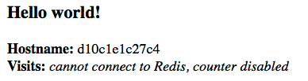

是时候用docker的方式构建一个应用了。我们首先从应用结构的最底层(容器)开始。在容器层上面是服务层，定义了容器在生产环境下的表现，在最上层是栈，定义了所有服务之间的交互关系。
应用结构如下：
- 栈
- 服务
- 容器(我们现在在这个位置)
崭新的开始环境¶
在这之前，如果你要开始开发一个python应用，首先要在自己的机器上搭一个python运行环境。但是，这样的话，服务器上的python运行环境也必须和你开发机器上的环境一致。
有了Docker，你可以使用镜像的方式获取python环境，不需要安装，你可以在这个环境下开发你的应用，并把应用集成进这个镜像中，这样应用、运行环境和依赖库都在一个统一的地方，可以在部署时一起移动。
这个可移动的镜像可以通过一个名为Dockerfile的文件来定义。
用Dockerfile来定义容器¶
Dockerfile定义在容器内部执行的步骤。访问资源如网络接口以及磁盘驱动器可以在容器内部进行，这就隔离了与其它系统的交互。但是为了真正的访问外部世界，你需要做一些端口映射和文件拷贝工作从而与外部世界建立联系。只要这一过程完成，你就可以确保你的应用在任何地方运行都是一致的。
首先创建一个空目录，然后在这个目录下面建立一个名为Dockerfile的文件。注意下面文件内容中的注释，可以帮你更好的理解工作原理：
1 2 3 4 5 6 7 8 9 10 11 12 13 14 15 16 17 18 19 20 | # Use an official Python runtime as a parent image FROM python:2.7-slim # Set the working directory to /app WORKDIR /app # Copy the current directory contents into the container at /app ADD . /app # Install any needed packages specified in requirements.txt RUN pip install -r requirements.txt # Make port 80 available to the world outside this container EXPOSE 80 # Define environment variable ENV NAME World # Run app.py when the container launches CMD ["python", "app.py"] |
这个Dockerfile中引用到的一些其它文件像app.py和requirements.txt还没有提到。我们在接下来的部分中创建它们。
应用本身¶
把下面的两个文件放在与Dockerfile相同的目录下。那两个文件就是我们完整的应用，实现过程很简单。当我们要创建镜像时，app.py和requirements.txt文件会被放入镜像中，因为我们使用了指令ADD，同时，应用的输出也会被外部访问到，因为我们使用指令EXPOSE暴露了端口至外部。
requirements.txt
1 2 | Flask Redis |
app.py
1 2 3 4 5 6 7 8 9 10 11 12 13 14 15 16 17 18 19 20 21 22 23 24 | from flask import Flask from redis import Redis, RedisError import os import socket # Connect to Redis redis = Redis(host="redis", db=0, socket_connect_timeout=2, socket_timeout=2) app = Flask(__name__) @app.route("/") def hello(): try: visits = redis.incr("counter") except RedisError: visits = "<i>cannot connect to Redis, counter disabled</i>" html = "<h3>Hello {name}!</h3>" \ "<b>Hostname:</b> {hostname}<br/>" \ "<b>Visits:</b> {visits}" return html.format(name=os.getenv("NAME", "world"), hostname=socket.gethostname(), visits=visits) if __name__ == "__main__": app.run(host='0.0.0.0', port=80) |
现在我们来看Dockerfile文件里的指令pip install -r requirements.txt安装了依赖库Flask和Redis,并且应用的输出是打环境变量NAME和通过调用命令socket.gethostname()来输出机器名称。由于Redis还没有运行起来，我们的应用如果此时被运行，应该是会失败并产生错误信息输出。
注意：在容器内部获得的机器名称是容器的ID，这个ID类似于进程ID。
构建应用¶
宿主系统上不需要安装python和requirements.txt中所列的依赖，这些东西也不会在构建过程中安装在宿主系统上。这看上出不可能，但你确实已经可以建立起一个应用的开发环境了。
先来看下目录下面有什么内容：
1 2 | $ ls Dockerfile app.py requirements.txt |
下面我们运行构建命令来建立我们的Docker镜像。我们使用-t选项为我们构建的镜像指定一个友好的名称，方便之后的使用。
1 | $ docker build -t friendlyhello . |
运行成功后，构建的镜像会在你本地的Docker镜像登记处。以下命令查看：
1 2 3 | $ docker images REPOSITORY TAG IMAGE ID CREATED SIZE friendlyhello latest dd76f8897238 Less than a second ago 194MB |
运行应用¶
使用下面的命令将宿主机的4000端口映射到容器的80端口，-p选项可以用来指定端口映射：
1 2 | $ docker run -p 4000:80 friendlyhello * Running on http://0.0.0.0:80/ (Press CTRL+C to quit) |
你会看到我们的python应用在http://0.0.0.0:80地址向外部提供服务。但是容器的内部端口80已经被映射为宿主机的4000端口，所以我们需要访问:http://localhost:4000,我们会看到下面的场景：

你也可以使用命令行来访问我们的应用:
1 2 | $ curl http://localhost:4000 <h3>Hello world!</h3><b>Hostname:</b> d10c1e1c27c4<br/><b>Visits:</b> <i>cannot connect to Redis, counter disabled</i> |
注意:
EXPOSE指令只是告诉容器向外部暴露的端口。
-p 4000:80是把容器的80端口映射为宿主机的4000端口。
docker run -p会默认把EXPOSE的80端口映射为宿主机的80端口。
使用-d选项可以让容器以非阻塞的方式在后台运行，例如：
1 2 | $ docker run -p -d 4000:80 friendlyhello
2ee89a76e20b3d2e1aed89d3bd1dff40280a8649abdf756252fe334ece39f057
|
使用docker ps来查看当前正在运行的所有容器。使用docker stop <CONTAINER ID>来停止容器的运行。
1 2 3 4 5 6 7 | $ docker ps CONTAINER ID IMAGE COMMAND CREATED STATUS PORTS NAMES 2ee89a76e20b friendlyhello "python app.py" 8 seconds ago Up 55 seconds 0.0.0.0:8001->80/tcp relaxed_pare $ docker stop 2ee89a76e20b 2ee89a76e20b |
分享你创建的镜像给它人¶
为了证明你刚创建的镜像的可移植性，我们把它上传到登记处吧。
登记处是仓库的集合地，仓库是镜像的集合。在登记处创建一个帐号后，就可以上传一些仓库了。dockerCLI默认使用Docker的公共登记处。
注意: 我们使用Docker公共登记处只是因为它免费并且已经预先配置好了。我们当然可以选择其它的登记处来上传，也可以使用Docker Trusted Registry自己搭建私有登记处。
如果你在https://hub.docker.com上面创建过帐号，你可以使用那个帐号来登录并上传你的镜像。
1 2 3 4 5 | $ docker login Login with your Docker ID to push and pull images from Docker Hub. If you don't have a Docker ID, head over to https://hub.docker.com to create one. Username (zhulongyixian): Password: Login Succeeded |
emh1bG9uZ3lpeGlhbjpXdzU0Mzg1OTIzMAo=
给镜像打标签¶
给本地镜像打标签的格式是:username/repository:tag，tag是可选的, 默认为latest。username是你在登记处的帐户名称，repository是你在登记处自己帐号下面创建的仓库名称，tag就是你给镜像所打的标签了，可以用来作版本控制。
1 | $ docker tag friendlyhello zhulongyixian/hello:v1.0 |
运行docker images来查看镜像:
1 2 3 4 | $ docker images REPOSITORY TAG IMAGE ID CREATED SIZE friendlyhello latest c44e612afbaf About an hour ago 194MB zhulongyixian/hello v1.0 c44e612afbaf About an hour ago 194MB |
发布你的镜像¶
1 2 3 4 5 6 7 8 9 10 | $ docker push zhulongyixian/hello:v1.0 The push refers to a repository [docker.io/zhulongyixian/hello] 66ff03c1986b: Pushed 11d6afaa575f: Pushed 258c807552a6: Pushed 735a46068813: Mounted from library/python 2323e4886d1c: Mounted from library/python 3dd73719e600: Mounted from library/python 2c40c66f7667: Mounted from library/python v1.0: digest: sha256:8fbd239f550124a129ba0874c1634ac4c4b64835f544b66514eb579e00bfd5d4 size: 1787 |
一旦完成发布，你就可以在docker hub上面看到它，其它人也可以拉取你的镜像到自己的本地运行服务。
拉取你的镜像在其它地方运行¶
1 | docker run -p 4000:80 zhulongyixian/hello:v1.0 |
注意:如果不指定tag，docker默认会使用latest来拉取镜像
常用指令列表¶
1 2 3 4 5 6 7 8 9 10 11 12 13 14 15 16 | docker build -t friendlyname . # Create image using this directory's Dockerfile docker run -p 4000:80 friendlyname # Run "friendlyname" mapping port 4000 to 80 docker run -d -p 4000:80 friendlyname # Same thing, but in detached mode docker ps # See a list of all running containers docker stop <hash> # Gracefully stop the specified container docker ps -a # See a list of all containers, even the ones not running docker kill <hash> # Force shutdown of the specified container docker rm <hash> # Remove the specified container from this machine docker rm $(docker ps -a -q) # Remove all containers from this machine docker images -a # Show all images on this machine docker rmi <imagename> # Remove the specified image from this machine docker rmi $(docker images -q) # Remove all images from this machine docker login # Log in this CLI session using your Docker credentials docker tag <image> username/repository:tag # Tag <image> for upload to registry docker push username/repository:tag # Upload tagged image to registry docker run username/repository:tag # Run image from a registry |